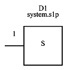
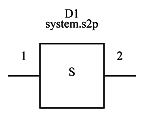
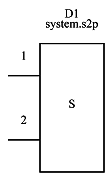
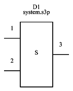
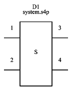
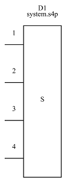
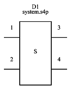
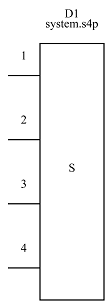
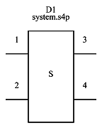
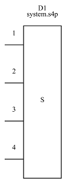

System




 





| Property Name | Type | Keyword | Units | (Default) Value |
| default reference | string | D? | ||
| reference | string | |||
| file name | file | None |
System devices are only used in Deembedding↑ applications and are used to specify the s-parameters of the system as defined by each Port↑ in the schematic.
See Defining the System↑ for more information on their use.
The system is defined by placing a special part in the schematic using Add System↑ or by using Add Part↑ and selecting System↑ devices from the Systems category.

System devices are the same as File↑ devices except their internal type.
They take an s-parameter file name in the file name property. The in the Part Properties Dialog, you can browse to the file and view the file in the S-parameter Viewer if you want.